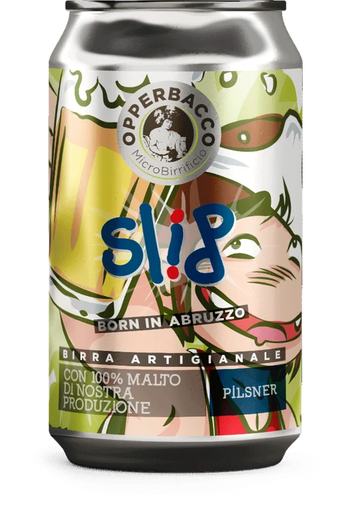
SLIP
Pilsner di ispirazione tedesca
Birre artigianali d'Abruzzo, tra i colli teramani, il Gran Sasso e il mare Adriatico.
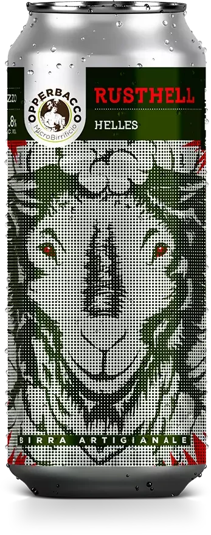
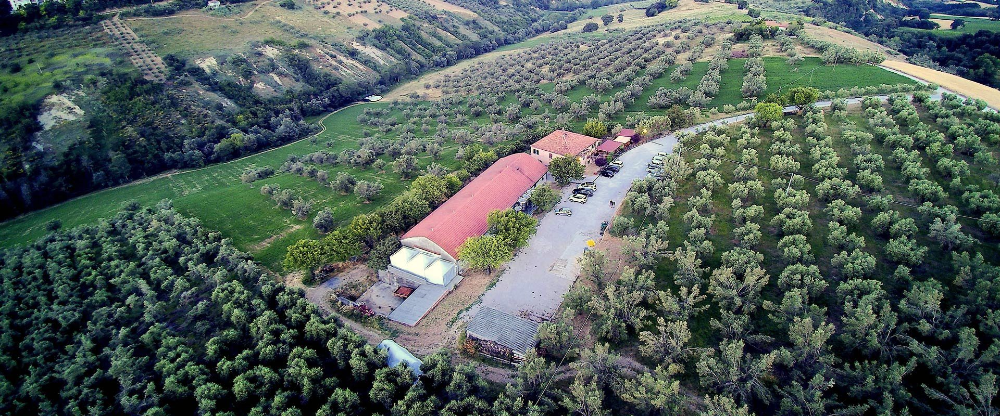
Notaresco (TE)Una vecchia stalla tra gli ulivi delle colline teramane
«Con il passare degli anni, l'esperienza e la tecnologia si sono sommate alla passione»: le birre più recenti, in lattina da 33 cl con le etichette illustrate.

Pilsner di ispirazione tedesca
Helles · 4,8% · frumento Rosciola di Castel del Monte
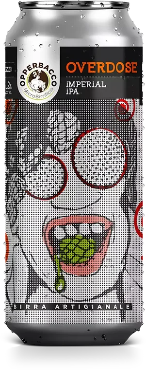
Imperial IPA
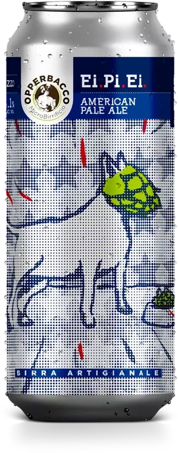
American Pale Ale
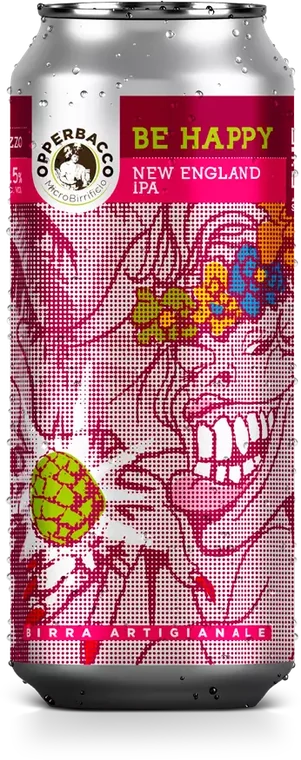
New England IPA
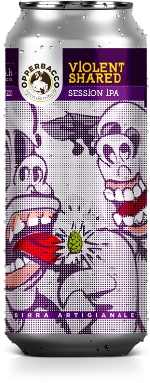
Session Grapefruit IPA
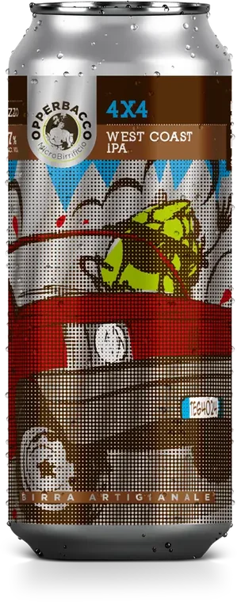
West Coast IPA
← scorri le lattine →
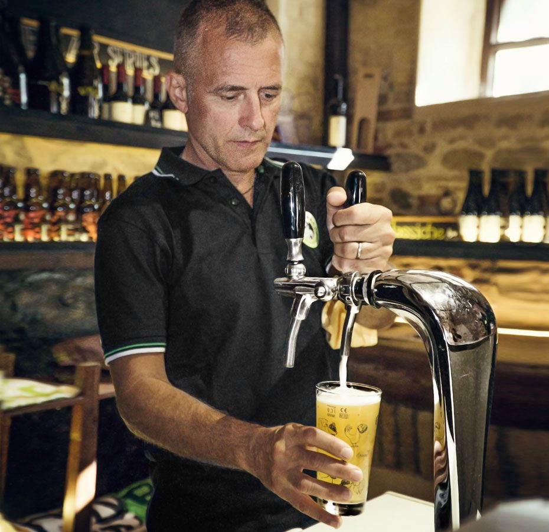
Il birrificio
Il Microbirrificio Opperbacco nasce nel 2009 a Notaresco, in provincia di Teramo, dal mastro birraio Luigi Recchiuti. La birra nasce in una vecchia stalla riadattata e attrezzata per la produzione.
Oggi produce circa 3.000 ettolitri l'anno per il mercato italiano ed estero, e collabora con l'Università di Teramo.
«Sono le birre che hanno dato il via al nostro sogno nel 2009.» Stili belgi e inglesi, in bottiglia da 33 e 75 cl.
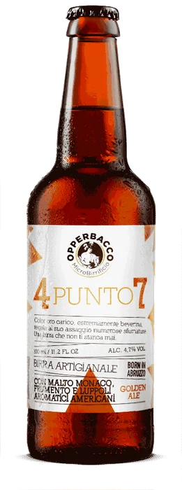
Golden Ale
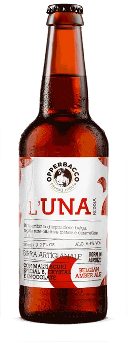
Belgian Amber Ale
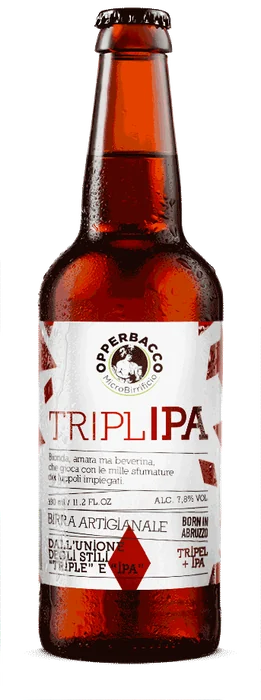
Tripel + IPA
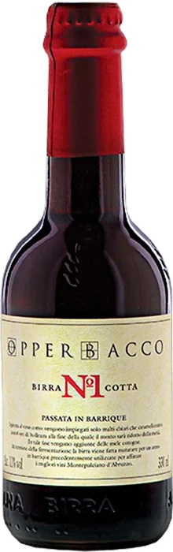
Barley Wine B.A.
Witbier del 2009 con menta piperita, buccia d'arancia, coriandolo e miele locale. 4,6% · 14 IBU.
Le birre che parlano la lingua delle vigne abruzzesi: uve, barrique e frutta del territorio.
«Dalla raccolta delle uve, nelle vigne dei migliori produttori di vini naturali abruzzesi.» Nature Terra con uve di Montepulciano d'Abruzzo, Nature Viva con uve di Trebbiano. L'uva è il 20% della ricetta.
«Se le Nature hanno un ciclo annuale legato alla vendemmia, le Abruxensis sono realizzate stagionalmente ogni 4 mesi.» Frutta abruzzese, lieviti selvaggi e maturazione in barrique ex Montepulciano d'Abruzzo. In bottiglia da 33 cl e in fusto da 16 litri.
Abruxensis: melograno, genziana, mandarini, farmhouse, mele, arance
Dal primo posto al Campionato Italiano del 2009 alla Chiocciola Slow Food del 2023. Una selezione dei riconoscimenti.
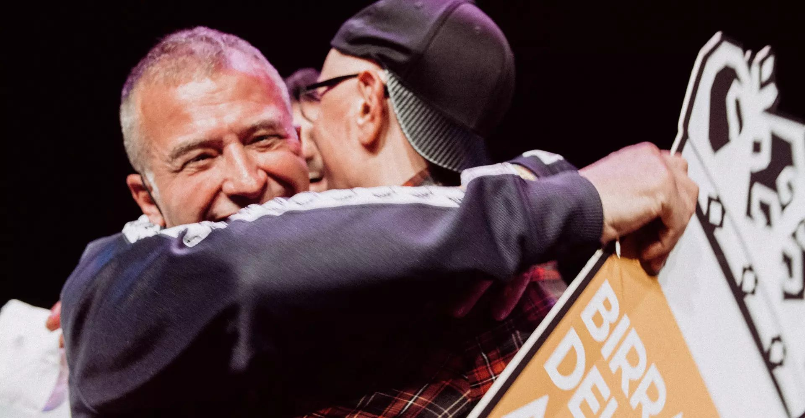
Accanto al birrificio: tutte le birre alla spina, pizza con l'impasto al malto d'orzo e arrosticini fatti a mano.
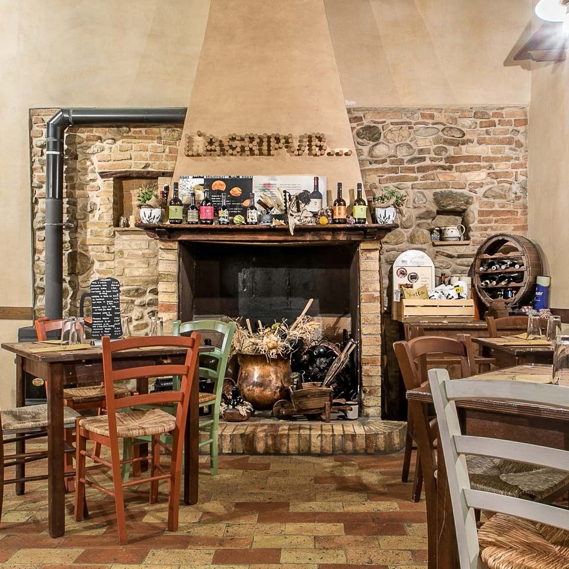
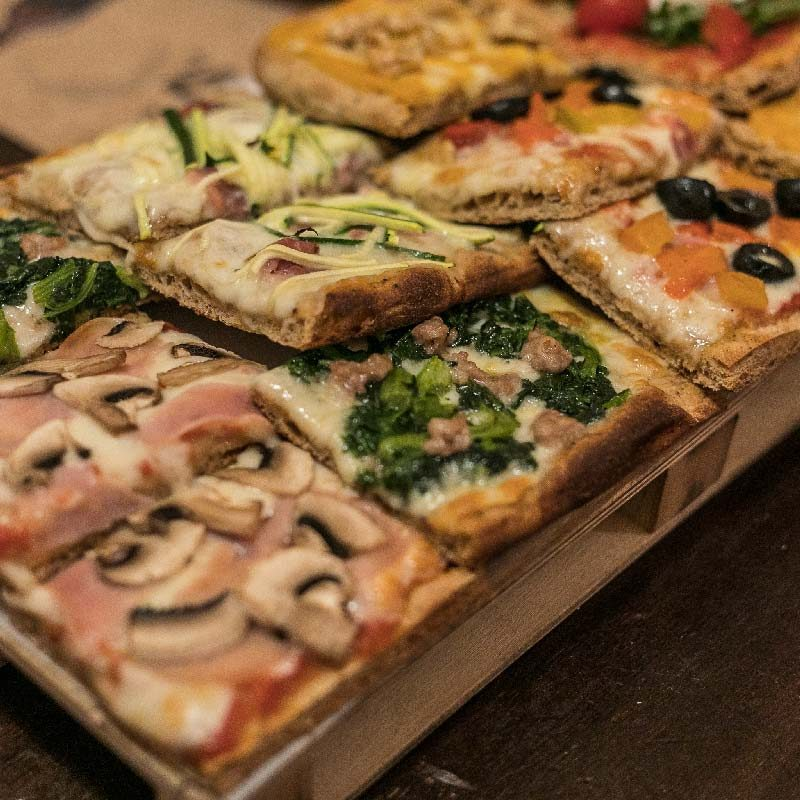
Orari
Tutti i giorni tranne il mercoledì
19:30 – 01:00
Via Casarino, Notaresco (TE)
Il birrificio e l'Agripub sono a Notaresco, sulle colline tra Teramo e il mare.